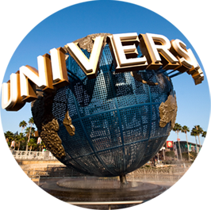

Universal Studios!
유니버셜 스튜디오는 미국의 영화제작사입니다.
테마파크로 만들어진 유니버셜 스튜디오 할리우드는
1964년 7월 15일에 개장한 이후,
전세계 사람들의 사랑을 받고 있습니다.
유니버셜 스튜디오는 미국의 영화제작사입니다.
테마파크로 만들어진 유니버셜 스튜디오 할리우드는
1964년 7월 15일에 개장한 이후,
전세계 사람들의 사랑을 받고 있습니다.
지도의 마커를 눌러 티켓을 구매할 수 있습니다.

유니버셜 할리우드는 실제 할리우드 영화 속 장면을 토대로 만들어졌으며, 영화 촬영지 투어를 제공합니다.
트램을 타고 킹콩, 죠스를 만나보세요.